Chapter 10. EWARS account settings
The Super Administrator creates an account for each Early Warning, Alert and Response System (EWARS) system that is functional centrally. Following account creation, the Account Administrator configures details for the account. This chapter will help you perform key actions including configuring details such as account name, domain name, setting synchronization expiry time, screen lock time and more (Fig. 10.1).
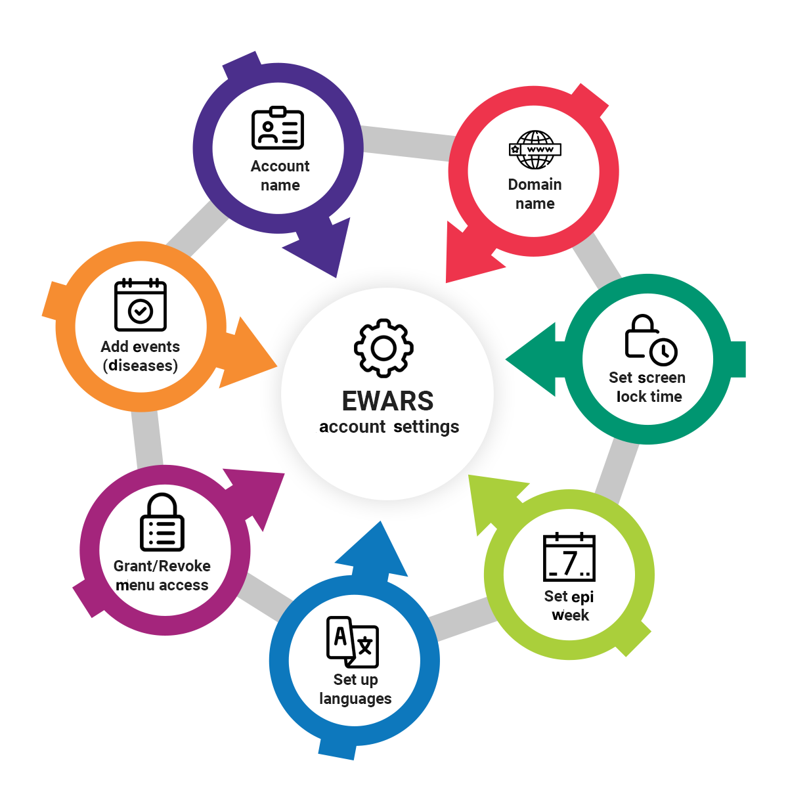
Fig. 10.1. Account configuration actionsAccount details are configured under Settings in their respective sections, as shown below:
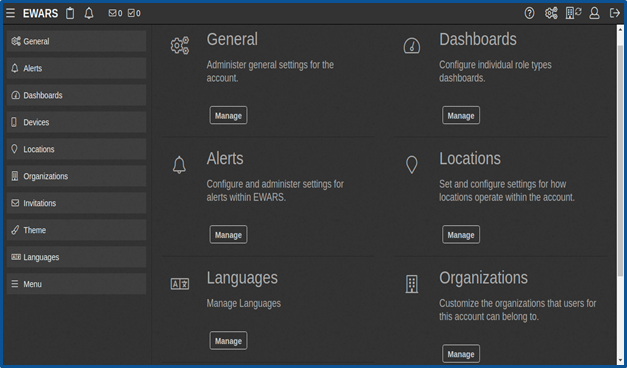
The following sections illustrate how to edit the account details under general settings.
10.1 Editing the EWARS account name
- Click on the settings icon at the top right-hand corner of the dashboard > click on
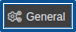
, and the screen below appears:
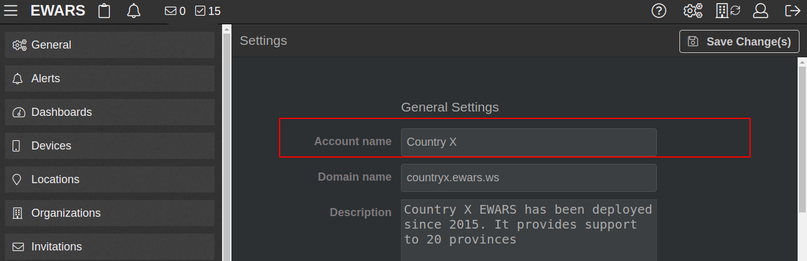
- Make changes to the Account name (e.g. “Country X”). Click on Save Change(s), and the name is edited.
10.2 Editing the EWARS account domain
- Click on the settings icon > click on
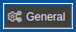
, and the screen below appears:
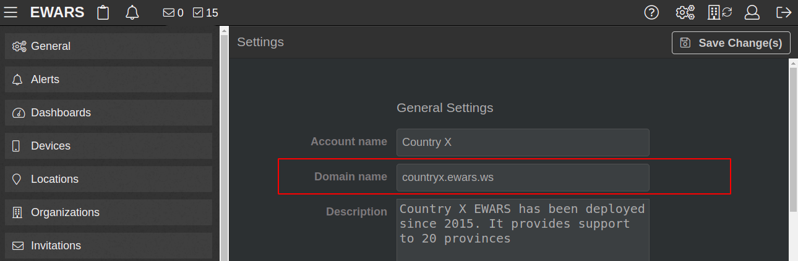
- Make changes to the Domain name (noting that the domain name must end “.ewars.ws” – e.g. “countryx.ewars.ws”). Click on Save Change(s), and the name is edited.
 Note: the Super Administrator may have set the domain name already; if so, you should not change it. Note: the Super Administrator may have set the domain name already; if so, you should not change it. |
10.3 Setting screen lock time
Screen lock time refers to the time interval (in minutes) after which the EWARS Web screen will lock automatically. You need to log in again if the screen becomes locked.
- Click on the settings icon > click on , and the screen below appears:
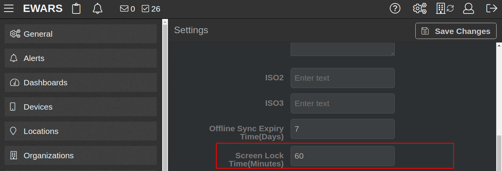
- Enter the Screen Lock Time(Minutes) in minutes (e.g. “30”). Click on Save Change(s).
10.4 Setting the offline sync expiry time in days
Once you synchronize (sync) your account, the system allows you to work in offline mode for a fixed interval before the expiry time is reached. If you do not sync your account before the expiry time is reached, the account is locked. An Account Administrator can set the offline sync expiry time. You can set this time interval (in days) for the EWARS Stand-alone application.
| Note: Syncing is only done by EWARS Mobile users and Stand-alone users. |
- Click on the settings icon at the top right-hand corner of the dashboard > click on
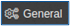
, and the screen below appears:
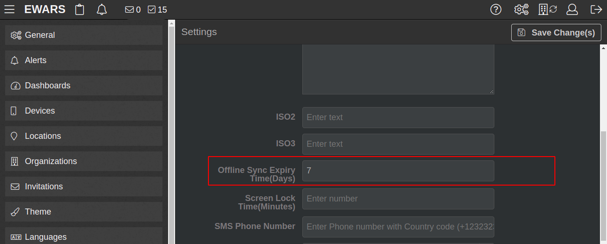
- Enter the Offline Sync Expiry Time (Days) time interval in days (e.g. “7”). Click on Save Change(s).
10.5 Setting the epi week
An epidemiological week (epi week) is a standardized method to define a week as a period to group epidemiological events. Normally, an epi week starts on Sunday or Monday.
In EWARS, the default epi week starts on Monday, and the epi week is thus Monday to Sunday. If you change the epi week start to Sunday, the format for the epi week is Sunday to Saturday.
| Note: it is recommended that the epi week start should be set at the beginning, while setting up the account, and that it should not be changed. |
- Click on the settings icon > click on , and the screen below appears
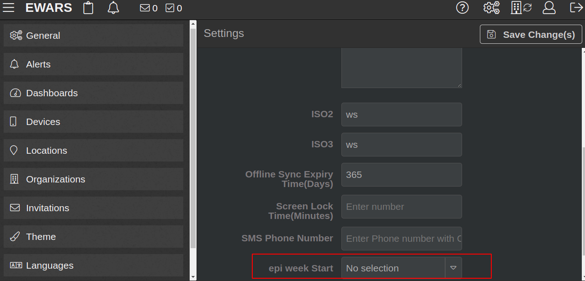
- Select the epi week Start day (e.g. Sunday). Click on Save Change(s).
10.6 Setting up languages
EWARS provides multilingual support. The Super Administrator sets the default language for your account; however, if required, the Account Administrator can change the default language.
The following topics set out details about other available languages and their status.
10.6.1 Viewing available languages
- Click on the settings icon > click on
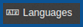
, and a list of languages opens, as shown below:
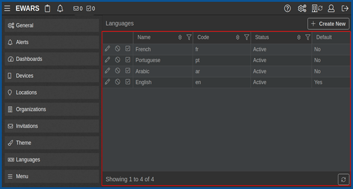
The Super Administrator sets the default language as English.
10.6.2 Changing the default language
- Click on the settings icon > click on > look for the preferred language (e.g. French). Click on the set as default
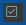
icon > click on Yes, and the default language changes from English to French.
10.6.3 Activating and deactivating languages
- Click on the settings icon > click on > click on the change status icon > click on Yes, and the language status is changed from Active to Inactive, or from Inactive to Active.
 Once a Once a |
language is set as the default language in EWARS, all instructions, forms, logs, dashboards, bulletins and similar appear in that language. |
You can also make the other languages in your account active to facilitate creation of forms in other languages. For example, if you want to create the reporting form in French, set the status of French as active.
10.6.4 Adding a new language to your account
If your system will function in an emergency context whose business language is not English, you can add a new language to your account.
For example, you can add new language support for Czech by following the steps below.
Step 1. Add the Czech language to your account.
- Click on the settings icon > click on > click on
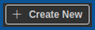
, and the screen below appears:
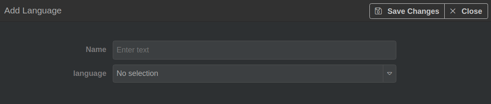
- Enter the Name of the language (e.g. “Czech”) > select Czech from the Language drop-down menu. Click on Save Change(s), and the language is added to the list, as shown below:
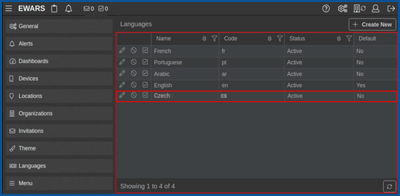
Step 2. Add translations.
- Click on the edit
 icon of Czech, and the screen below appears:
icon of Czech, and the screen below appears:
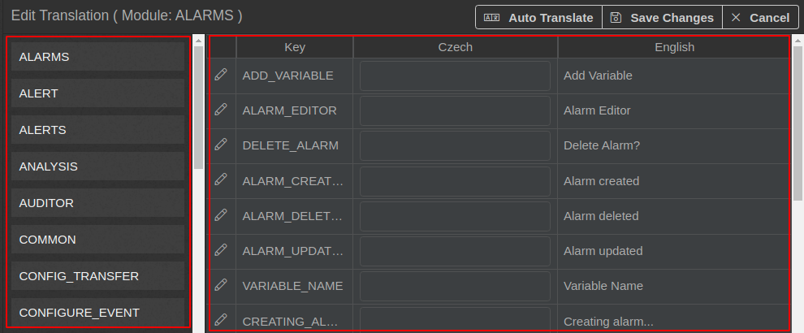
- Click on
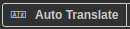
> click on Yes. The labels are translated, and the screen below appears:
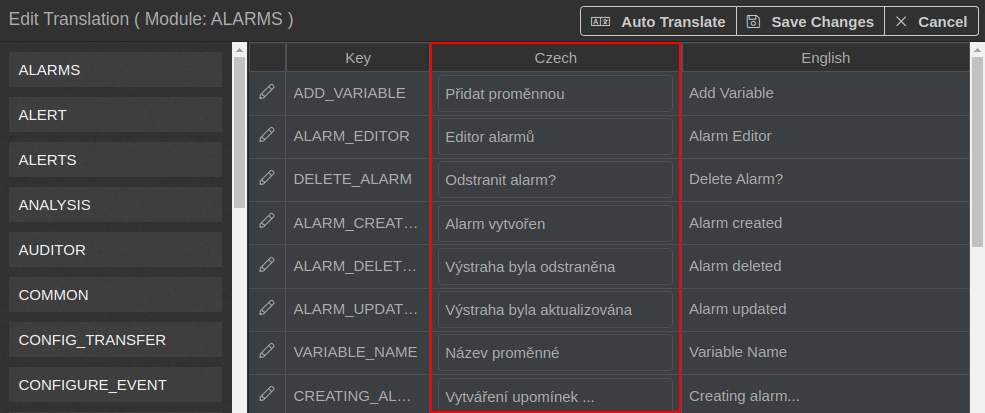
| Note: currently, EWARS uses IBM language services for translation. |
- Click on Save Change(s).
Step 3. Edit auto-translated labels.
The auto-translated options may need some modifications, especially for technical terms.
- Click on the edit icon next to the key label (e.g. ADD_VARIABLE), and the screen below appears:
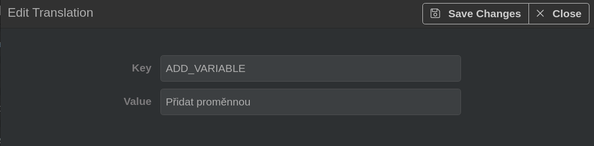
- Edit or enter a new translation in the Value field. Click on Save Change(s).
10.7 Menu access
Menu access refers to the permissions or rights of each user in the system. EWARS can grant or revoke access to the menu for any individual user, based on their role.
| You ca |
n modify the permissions of different users, so that they may or may not be able to perform certain tasks and actions in the system. This flexibility is needed especially when you have a large geographical area and a diverse user group with varying needs. |
10.7.2 Revoking menu access
Sometimes you may not want certain roles or users making changes to the settings and other features on an ongoing basis. You can therefore revoke access.
- Click on the settings icon > click on > click on the relevant menu in the list at the left-hand side (e.g. Alarms). In the relevant user or row field, click on the delete
 icon under Action > click on Yes, and access is revoked.
icon under Action > click on Yes, and access is revoked.
10.8 Categorizing alert events reported to EWARS
This feature is used under the alert management module when alerts are based on events.
Event-based surveillance alerts are usually reported from the community and may not be reported as a particular disease or condition. However, the WHO or ministry of health surveillance officer may allocate the alert to disease categories (e.g. acute flaccid paralysis (AFP) or haemorrhagic fever) for further investigation during management of the alert.
In some instances, you can allow alerts from event-based surveillance forms to indicate what the alert or the rumour is likely to be. For example, clusters of cases and deaths following vomiting, diarrhoea and fever are likely to be caused by cholera. This indication of the “likely disease” will help alert management in detecting the outbreak rapidly.
| Note: you can add a list of likely diseases that should be considered in the alert management module for alerts sent via event-based surveillance forms. |
For more information, refer to Chapter 13. Alert log, topic 13.3 Assessing the risk of an alert.
Follow the steps below to add the list of diseases you want to be considered “likely” under alerts from the event-based surveillance forms.
Step 1. Categorize the event.
- Click on the settings icon > click on Alerts. Click on Yes in Show Likely Event in Risk Assessment, and the system displays the field Likely Events(Diseases), as shown below:
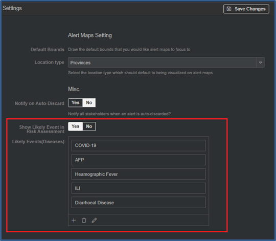
Step 2. Add the disease.
Click on the add
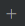
icon to add a new disease to the list > enter “Cholera” in Display Name (visible to the user) and “CH” in Value (stored in the system). Click on Save Change(s).To edit the disease, click on the edit
icon > change the display name. Click on Save Change(s).To delete the disease, click on the delete
icon. Click on Save Change(s).
The following chapter explains how to submit reports, check for duplicate records, and amend or download them according to user requirements.